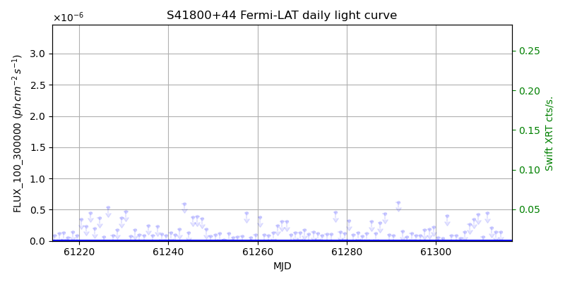
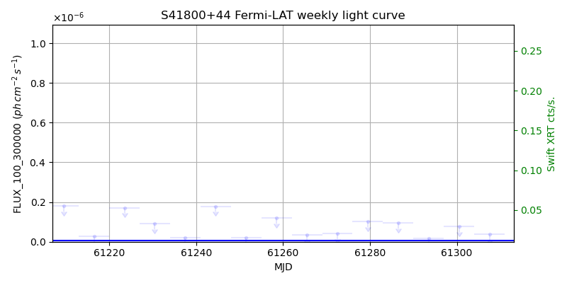
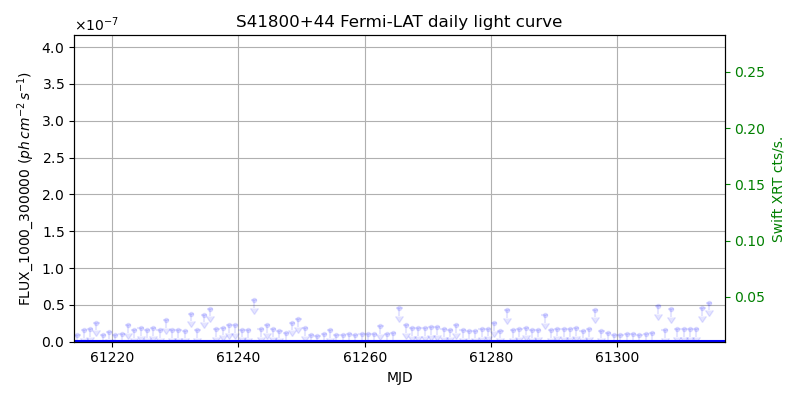
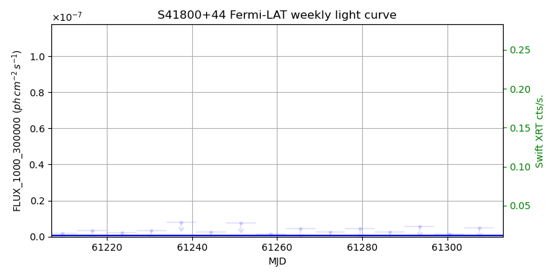

LAT Lightcurve site: https://fermi.gsfc.nasa.gov/ssc/data/access/lat/msl_lc/source/S4_1800p44
Swift site: https://www.swift.psu.edu/monitoring/source.php?source=S41800+44
NED: Query
Time of last update of this page: UT: 2026-10-02 15:25 (MJD: 61315.643)
| Property | Value |
|---|---|
| R.A. | 18:01:32.40 |
| Dec. | 44:04:22.8 |
| z | 0.663 |
| 3FGL SpectrumType | PowerLaw |
| 3FGL PL Index | 2.70 |
| 3FGL Flux_100_300000 | 2.39e-08 1 / (s cm2) |
| 3FGL Flux_1000_300000 | 4.82e-10 1 / (s cm2) |
| 3FGL Flux >200 GeV | 6.06e-14 1 / (s cm2) |
| 3FGL Extrap. Crab >200 GeV | 0.00 |
| 3FGL Flux After EBL Absorption >200GeV | 5.11e-15 1 / (s cm2) |
| 3FGL EBL Crab Fraction >200GeV | 0.00 |

| MJD | dMJD | Flux | dFlux | Frac3FGL | FracCrab>200GeV | EBLFracCrab>200GeV |
|---|---|---|---|---|---|---|
| 61310.50 | 0.50 | 6.92e-08 | 0.00e+00 | 0.00 | 0.00 | 0.00 |
| 61311.50 | 0.50 | 4.48e-07 | 0.00e+00 | 0.00 | 0.00 | 0.00 |
| 61312.50 | 0.50 | 2.09e-07 | 0.00e+00 | 0.00 | 0.00 | 0.00 |
| 61313.50 | 0.50 | 1.43e-07 | 0.00e+00 | 0.00 | 0.00 | 0.00 |
| 61314.50 | 0.50 | 1.46e-07 | 0.00e+00 | 0.00 | 0.00 | 0.00 |

| MJD | dMJD | Flux | dFlux | Frac3FGL | FracCrab>200GeV | EBLFracCrab>200GeV |
|---|---|---|---|---|---|---|
| 61279.50 | 3.50 | 1.01e-07 | 0.00e+00 | 0.00 | 0.00 | 0.00 |
| 61286.50 | 3.50 | 9.37e-08 | 0.00e+00 | 0.00 | 0.00 | 0.00 |
| 61293.50 | 3.50 | 1.66e-08 | 0.00e+00 | 0.00 | 0.00 | 0.00 |
| 61300.50 | 3.50 | 7.58e-08 | 0.00e+00 | 0.00 | 0.00 | 0.00 |
| 61307.50 | 3.50 | 3.87e-08 | 0.00e+00 | 0.00 | 0.00 | 0.00 |

| MJD | dMJD | Flux | dFlux | Frac3FGL | FracCrab>200GeV | EBLFracCrab>200GeV |
|---|---|---|---|---|---|---|
| 61310.50 | 0.50 | 1.73e-08 | 0.00e+00 | 0.00 | 0.00 | 0.00 |
| 61311.50 | 0.50 | 1.74e-08 | 0.00e+00 | 0.00 | 0.00 | 0.00 |
| 61312.50 | 0.50 | 1.69e-08 | 0.00e+00 | 0.00 | 0.00 | 0.00 |
| 61313.50 | 0.50 | 4.52e-08 | 0.00e+00 | 0.00 | 0.00 | 0.00 |
| 61314.50 | 0.50 | 5.31e-08 | 0.00e+00 | 0.00 | 0.00 | 0.00 |

| MJD | dMJD | Flux | dFlux | Frac3FGL | FracCrab>200GeV | EBLFracCrab>200GeV |
|---|---|---|---|---|---|---|
| 61279.50 | 3.50 | 4.39e-09 | 0.00e+00 | 0.00 | 0.00 | 0.00 |
| 61286.50 | 3.50 | 2.60e-09 | 0.00e+00 | 0.00 | 0.00 | 0.00 |
| 61293.50 | 3.50 | 5.67e-09 | 0.00e+00 | 0.00 | 0.00 | 0.00 |
| 61300.50 | 3.50 | 1.57e-09 | 0.00e+00 | 0.00 | 0.00 | 0.00 |
| 61307.50 | 3.50 | 4.95e-09 | 0.00e+00 | 0.00 | 0.00 | 0.00 |
--------------------------------------------------------- Using user-supplied coords: 18:01:32.40 44:04:22.8 2000 --------------------------------------------------------- FLWO UT night of: 2026-10-03 Local Sid. @ Midnight: 00:24 Sunset (-15.0) (local, UT): 19:14 02:14 Sunrise (-15.0) (local, UT): 05:12 12:12 Moonrise (local, UT): 22:48 05:48 Moonset (local, UT): Moon phase: 0.53 --------------------------------------------------------- AzTime LSID UT Obj_el Obj_az Mn_el Mn_az Sep. --------------------------------------------------------- 19:14 19:37 02:14 67.7 310.5 -28.5 20.1 109.0 19:44 20:07 02:44 62.6 305.9 -26.2 26.7 109.0 20:14 20:37 03:14 57.4 303.5 -23.2 32.8 109.0 20:44 21:07 03:44 52.0 302.5 -19.6 38.5 108.9 21:14 21:37 04:14 46.6 302.5 -15.7 43.6 108.9 21:44 22:07 04:44 41.2 303.1 -11.3 48.4 108.9 22:14 22:37 05:14 35.9 304.2 -6.5 52.7 108.8 22:44 23:07 05:44 30.6 305.8 -0.8 56.7 108.8 23:14 23:37 06:14 25.5 307.7 3.8 60.4 108.7 23:44 00:07 06:44 20.5 309.9 9.1 63.9 108.7 00:14 00:38 07:14 15.7 312.5 14.6 67.1 108.6 00:44 01:08 07:44 11.2 315.4 20.3 70.2 108.6 01:14 01:38 08:14 6.8 318.6 26.1 73.1 108.6 01:44 02:08 08:44 2.9 322.2 32.1 76.0 108.5 02:14 02:38 09:14 -0.5 326.1 38.1 78.8 108.5 02:44 03:08 09:44 -3.1 330.3 44.2 81.7 108.4 03:14 03:38 10:14 -7.4 334.8 50.3 84.8 108.4 03:44 04:08 10:44 -9.9 339.7 56.5 88.1 108.4 04:14 04:38 11:14 -11.9 344.8 62.7 91.9 108.4 04:44 05:08 11:44 -13.3 350.2 68.9 96.9 108.4 05:12 05:37 12:12 -14.0 355.4 74.7 103.8 108.4 --------------------------------------------------------- Dark hours >55 deg.: 1.22 srcstart (UT): 2026-10-03 02:13 srcend (UT): 2026-10-03 03:27